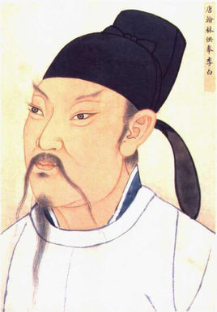
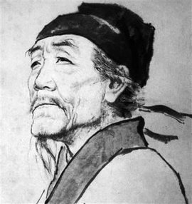
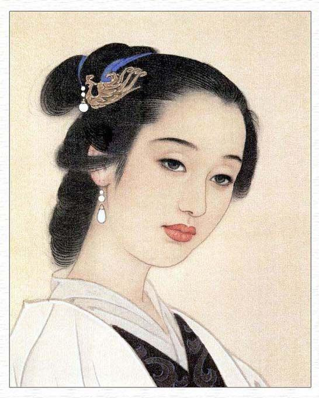
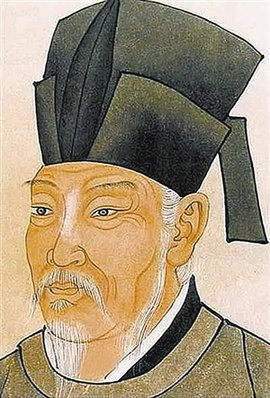

- 
李白
李白（701年—762年） ，字太白，号青莲居士，又号“谪仙人”。是唐代伟大的浪漫主义诗人，被后人誉为“诗仙”。与杜甫并称为“李杜”，为了与另两位诗人李商隐与杜牧即“小李杜”区别，杜甫与李白又合称“大李杜”。其人爽朗大方，爱饮酒作诗，喜交友。 李白有《李太白集》传世，诗作中多以醉时写的，代表作有《望庐山瀑布》、《行路难》、《蜀道难》、《将进酒》、《越女词》、《早发白帝城》等多首。 李白所作词赋，宋人已有传记（如文莹《湘山野录》卷上），就其开创意义及艺术成就而言，“李白词”享有极为崇高的地位。
- 
杜甫
杜甫（公元712年-公元770年），字子美，自号少陵野老。汉族，祖籍襄阳，河南巩县（今河南省巩义）人。唐代伟大的现实主义诗人，与李白合 称“李杜”。为了与另两位诗人李商隐与杜牧即“小李杜”区别，杜甫与李白又合称“大李杜”，杜甫也常被称为"老杜"。杜甫在中国古典诗歌中的影响 非常深远，被后人称为“诗圣”，他的诗被称为"诗史"。后世称其杜拾遗、杜工部，也称他杜少陵、杜草堂。杜甫创作了《春望》、《北征》、《三吏》、 《三别》等名作。759年杜甫弃官入川，虽然躲避了战乱，生活相对安定，但仍然心系苍生，胸怀国事。虽然杜甫是个现实主义诗人，但他也有狂放不羁 的一面，从其名作《饮中八仙歌》不难看出杜甫的豪气干云。杜甫虽然在世时名声并不显赫，但后来声名远播，对中国文学和日本文学都产生了深远的影响。 杜甫共有约1500首诗歌被保留了下来，大多集于《杜工部集》。
-

陆游
陆游（1125年—1210年），字务观，号放翁，汉族，越州山阴（今绍兴）人，南宋文学家、史学家、爱国诗人。陆游生逢北宋灭亡之际，少年时即深受家 庭爱国思想的熏陶。宋高宗时，参加礼部考试，因受秦桧排斥而仕途不畅。宋孝宗即位后，赐进士出身，历任福州宁德县主簿、敕令所删定官、隆兴府通 判等职，因坚持抗金，屡遭主和派排斥。乾道七年（1171年），应四川宣抚使王炎之邀，投身军旅，任职于南郑幕府。次年，幕府解散，陆游奉诏入蜀， 与范成大相知。宋光宗继位后，升为礼部郎中兼实录院检讨官，不久即因“嘲咏风月”罢官归居故里。嘉泰二年（1202年），宋宁宗诏陆游入京，主持编修 孝宗、光宗《两朝实录》和《三朝史》，官至宝章阁待制。书成后，陆游长期蛰居山阴，嘉定二年（1210年）与世长辞，留绝笔《示儿》。
- 
李清照
李清照（1084年3月13日—1155年5月12日），号易安居士，汉族，齐州章丘（今山东章丘）人。宋代女词人，婉约词派代表，有“千古第一才女”之称。李清照 出生于书香门第，早期生活优裕，其父李格非藏书甚富，她小时候就在良好的家庭环境中打下文学基础。出嫁后与夫赵明诚共同致力于书画金石的搜集整理。 金兵入据中原时，流寓南方，境遇孤苦。所作词，前期多写其悠闲生活，后期多悲叹身世，情调感伤。形式上善用白描手法，自辟途径，语言清丽。论词强调 协律，崇尚典雅，提出词“别是一家”之说，反对以作诗文之法作词。能诗，留存不多，部分篇章感时咏史，情辞慷慨，与其词风不同。
- 
白居易
白居易（772年－846年），字乐天，号香山居士，又号醉吟先生，祖籍太原，到其曾祖父时迁居下邽，生于河南新郑。是唐代伟大的现实主义诗人，唐代三大 诗人之一。白居易与元稹共同倡导新乐府运动，世称“元白”，与刘禹锡并称“刘白”。白居易的诗歌题材广泛，形式多样，语言平易通俗，有“诗魔”和“诗王”之 称。官至翰林学士、左赞善大夫。公元846年，白居易在洛阳逝世，葬于香山。有《白氏长庆集》传世，代表诗作有《长恨歌》、《卖炭翁》、《琵琶行》等。